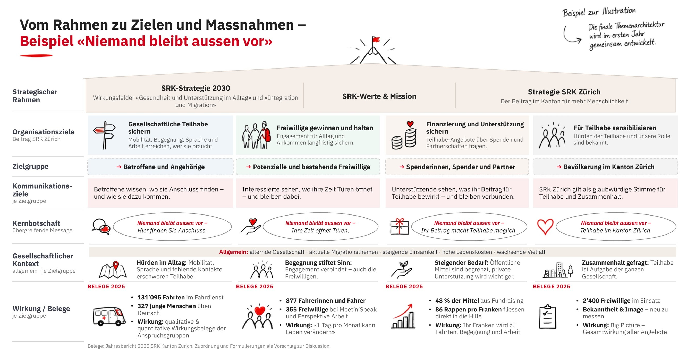

Willkommen – was möchten Sie ansehen?
Folien durchblättern und herunterladen
Präsentation vom 23.11.2026 – als Slideshow und als PDF.
Zur Präsentation ↓ 02 · Exkurs zur Case StudyThemenarchitektur und Ansprache
Überlegungen, wie Themen das Angebot ordnen und Fachbereiche verbinden – mit Werkzeug zum Filtern und dem Zielhaus als Beispiel.
Zum Exkurs ↓Präsentation vom 23.11.2026
Alle Folien zum Durchblättern – mit Pfeiltasten, Wischen oder über die Vorschaubilder. Und als PDF zum Herunterladen.
Themenarchitektur SRK Zürich
Rund 35 Angebote, heute in sieben Ordnungssystemen nebeneinander. Die Idee: Zwei Ebenen von Themen schaffen Orientierung. Leitthemen ordnen das Angebot, Fokusthemen verbinden alle Fachbereiche zu einer Geschichte.
Ein erster Denkanstoss von aussen, kein fertiges Konzept. Themen, Zuordnungen und Einschätzungen beruhen auf öffentlich zugänglichen Informationen. Sie sind als Ausgangspunkt gedacht, um sie gemeinsam mit dem Team und den Fachbereichen zu prüfen und weiterzuentwickeln.
Kriterien für ein Fokusthema: mindestens drei Fachbereiche tragen bei, Freiwillige haben eine Rolle, es taugt für Spenden und hat einen aktuellen Anlass. Lebensphasen sind keine eigene Ordnung, sondern eine Zielgruppen-Linse: Der Filter «Für wen» zeigt, welche Angebote eines Themas Kinder und Familien, junge Menschen, Erwachsene oder ältere Menschen erreichen.
Angebote nach Themen bündeln – für Kommunikation und Kampagnen
Die Tabelle zeigt, welche Angebote zu welchem Thema beitragen. So wird sichtbar, welche Geschichten sich über mehrere Fachbereiche erzählen lassen, wen sie erreichen und wofür sie in der Mittelbeschaffung taugen.
- Ebene wählen. Leitthemen zeigen, wie sich das Angebot auf Website und im Jahresbericht ordnen lässt. Fokusthemen zeigen, welche Angebote gemeinsam eine Kampagne tragen – mit einer Einschätzung für Spenden, Legate, Stiftungen und Firmen.
- Fachbereich filtern. Welchen Beitrag leistet ein Bereich zu den Themen?
- Zielgruppe wählen. «Für wen» zeigt, welche Angebote Kinder und Familien, junge Menschen, Erwachsene oder ältere Menschen erreichen.
Lesehilfe: In der Fusszeile steht, wie viele Angebote und wie viele der drei Geschäftsbereiche zu einem Thema beitragen. Ein gutes Fokusthema bindet alle drei ein.
Angebote nach Website (Stand November 2026). Die Zuordnung zu Fachbereichen folgt dem Organigramm vom 1.8.2025, das nur als Text vorlag, und ist angenähert. Die Themenzuordnung ist ein Vorschlag zur Diskussion.
Vom Fokusthema zur Kommunikation
Ein Fokusthema wird über ein Zielhaus in Ziele, Zielgruppen und Botschaften übersetzt. Ein Beispiel – die Zielhäuser für weitere Fokusthemen entstehen gemeinsam mit den Fachbereichen.
Beispiel «Niemand bleibt aussen vor»
Welche Angebote tragen das Fokusthema?
